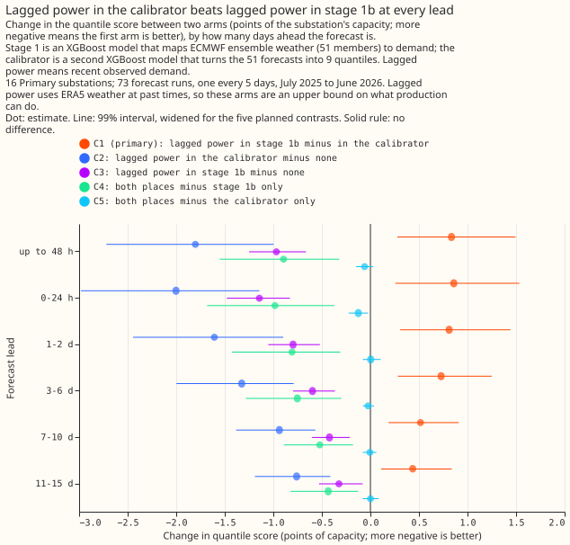
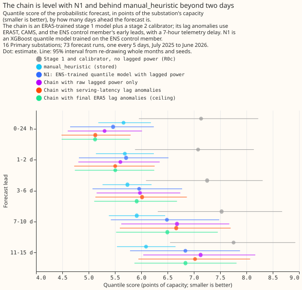
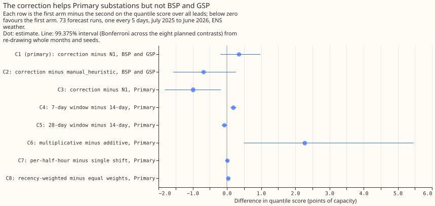

Lagged power and error correction
On 16 Primary substations over one validation year, both recent power fed to a second-stage calibrator and a correction by the mean error of the last 14 days lower the forecast error, by similar amounts against different reference forecasts; on solar farms, wind farms, and supply points neither has been shown to help.
Recent measured power can enter the forecast as input, or shift the forecast by its recent errors. The experiments put lagged power into stage 1b (a second model that corrects the weather-only forecast) or into the stage 2 calibrator, and tested variants of the 14-day correction. All scores are the quantile score in points of capacity, and lower is better. The five experiments of this theme scored 73 forecast runs, one every 5 days from July 2025 to June 2026. Other experiments cited use other run sets, stated where cited. Stage 1a is the weather-only forecast, trained on ERA5 and CAMS estimates of past weather.

Lagged power in the calibrator scored better than lagged power in stage 1b in every lead band (C1, stage 1b with a lag-free calibrator minus the calibrator with lags, where positive means stage 1b is worse; 99% intervals; 16 Primary substations). Source: experiment 5.
Does it work?
Recent power lowers the error, and it lowers it more in the calibrator than in stage 1b. For 16 Primary substations up to 48 hours ahead, the calibrator with lagged power scored 5.31, stage 1b with a calibrator that sees no lags scored 6.14, and a calibrator with no lags scored 7.11. The contrast is +0.84 (+0.28 to +1.50 at 99%), so the pre-registered idea that stage 1b is the better place was refuted. Using both placements lowered the score by at most 0.12 more. Stage 1b scored better at 8 of the 16 series, so the average hides a mixed result (experiment 5).
Summaries of recent power added no resolvable gain to the raw lags. Adding the minimum, mean, and maximum of the last 24 hours and of the same weekday changed the score by -0.02 (-0.14 to +0.13 at 98.75%; inconclusive). Replacing the raw lags with the summaries worsened it by 0.29 (+0.11 to +0.51). Summaries alone still beat no recent power (-1.18, -1.83 to -0.58) (experiment 8). Experiment 30 tested more lag columns in N1 and is on the demand inputs page.
With only the data a live service has, the two-stage chain is not distinguishable from N1. The
lagged inputs of experiments 5 and 8 use estimates of past weather that a live service lacks, so
they are ceilings. Experiment
18 rebuilt them from
weather available at the forecast origin and from NGED's real telemetry delay (the wait before a
power reading arrives; 7 hours). Over all leads the chain minus N1 was +0.08 (-0.11 to +0.25 at
99.17%; inconclusive). Up to 48 hours it was -0.27 (-0.62 to +0.03), and beyond 3 days +0.15 (-0.07
to +0.36). The chain scored 0.52 above the manual_heuristic
baseline (-0.25 to +1.25; interval includes zero). Lag anomalies lowered the score by only 0.04
against raw lagged power (-0.12 to +0.07).

The chain is level with N1, and above manual_heuristic beyond 3 days (point estimate; the
interval includes zero). Source: experiment
18.
The 14-day correction lowered the Primary score by about 1 point, a gain of similar size to lagged power in the calibrator against a different reference. Experiments 19 and 21 scored the correction on the same 73 runs and 16 Primary substations as experiments 5 and 18. N1 plus the correction scored 5.34 over all leads, against 6.33 for N1. The chain of experiment 18 scored 6.41, and lagged power in that chain gained -1.05 (-1.64 to -0.58) against a calibrator without lags (experiment 18, C2). The references differ and no paired interval compares them. Experiment 19 (power 3.5 hours old) gave -0.99 (-1.84 to -0.15 at 99.44%). Experiment 21 gave -0.99 (-1.82 to -0.18 at 99.375%) with power 2 days old. Experiment 19 is on the production reference and best guess page.

The correction lowered the Primary score, no variant beat the plain 14-day additive form, and the correction did not lower the score of the 4 bulk and grid supply point series. Source: experiment 21.
No variant of the correction beat the plain 14-day additive form on Primary substations. A 7-day window was worse (+0.19, +0.11 to +0.28), a 28-day window was level or slightly better (-0.07, -0.15 to +0.01), a multiplicative form was far worse (+2.28, +0.50 to +5.46), and a per-half-hour shift (+0.02) and recency weights (+0.04) changed nothing (experiment 21).
The correction is unproven for supply points, solar farms, and wind farms. On 4 bulk and grid supply point series it raised the score by 0.36 (-0.19 to +0.98 at 99.375%; inconclusive; experiment 21) and by 0.305 (95% interval 0.060 to 0.594) in the BG2 ablation on 292 daily runs (experiment 87). On 6 solar farms and 3 wind farms (53 Tuesday runs), lagged power left the calibrator's CRPS unchanged to about 0.1 points, and the correction raised it for solar (+0.437, +0.215 to +0.664) and did not clearly change it for wind (+0.413, -0.003 to +0.924) (experiment 23).
Lags near switching were tested in two other themes. Training with lags hidden at random did not widen the 5% to 95% band where a lag is missing. On 292 daily runs, the band covered 0.799 of real masked half-hours (37,394) for the plain model and 0.802 with lags hidden in 10% of rows, against 0.90 nominal (+0.003, -0.093 to +0.101 at 98.75%; inconclusive; experiment 100). Telling a monthly-refitted XGBoost model how unusual each lag is raised the score outside switching by 0.355 (+0.209 to +0.513 at 97.5%; refuted; experiment 90).
Best design so far
Of the designs tested in this theme, the stage 2 calibrator with raw lagged power is the best use of lagged power, and the additive 14-day correction is the best correction.
- Give the stage 2 calibrator (arm L3, the calibrator with lagged power, of experiment 5) the power 24, 48, 168, and 336 hours before the target, the four stage 1a residuals at those times, and five residuals at the newest observation. Keep the raw lags (experiment 8).
- For a live service, build the lag residuals from weather available at the origin (experiment 18), and apply a spread factor of 1.15 (-0.04, -0.08 to -0.00). This design did not beat N1.
- For Primary substations, add the mean error of the last 14 days of the forecast median to every quantile, using a window of 14 days or longer and an additive shift (experiment 21). No experiment combined the chain with the correction.
Candidates for production
No experiment in this theme is marked candidate; all five are not-for-production. The
correction for Primary demand is a candidate in experiments 19, 33, and 87, described on the
production reference and best guess page, and
experiment 30 is a candidate on the demand inputs page. Experiment 21
supports the correction with power 2 days old, which gave the same all-lead gain as power 3.5 hours
old, so the service need not wait for fresher telemetry. It supports no use at supply points.
Gotchas and implementation details
- Compare a lagged arm with a calibrated arm that has no lags. A calibrator without lags lowered the stage 1a score by 1.02 up to 48 hours (exploratory contrast E4, whose interval includes zero at some leads), and stage 1a alone scored 8.12 against 8.14 for day-type climatology. Against stage 1a alone, lags look about 1 point better than they are (experiment 5). Look for a lagged arm whose comparison has no calibrator.
- Label an arm a ceiling when its lag residuals use estimates of past weather. The arms of experiments 5 and 8 used ERA5 at lag times, and rebuilding them from serving sources worsened the score by 0.13 (+0.02 to +0.25; experiment 18). Re-check with a different weather source for the lag times.
- State the telemetry delay of every lagged arm. Experiment 5 used 0.5 hours (the newest half-hour before the origin), experiment 13 3.5 hours, and experiment 18 7 hours. Three and a half hours more delay worsened the chain by 0.13 over all leads and 0.16 up to 48 hours, so scores with different delays do not compare (experiment 18). Re-check on a different delay.
- Report how many series agree with the mean. C1 of experiment 5 (above) was +0.84 on average while stage 1b was better at 8 of the 16 Primary substations (experiment 5). Look for a mean over series with mixed signs.
- Do not correct a skewed target by the mean of observed minus median. That shift raised the solar CRPS by 0.437 and the wind CRPS by 0.413 (interval includes zero) and cut the 5% to 95% coverage to 53% to 77%. A median shift was tried once, post hoc, and moved the CRPS by +0.010 for solar and -0.064 for wind, with intervals that include zero (experiment 23). Re-check with a pre-registered median shift.
- Check the base forecast's bias before applying the correction. N1's two bulk supply point series had a bias of +0.01, so the correction only added noise (experiment 21), and in experiment 87 a frozen model with the correction scored 13.559 against 13.369 without it (experiment 87). Look for a base forecast with little bias.
- Build the correction's error history from the runs a live service would have. Experiments 19 and 21 measured each past half-hour's error from a run 0 to 5 days earlier, with runs 5 days apart, and applied it up to 15 days ahead. A daily service sees smaller errors at shorter leads, and experiment 87 scored the correction on 292 daily runs (experiment 19, experiment 21). Look for a run schedule other than every 5 days.
- Keep a control that keeps the event rows when testing masked lags. Dropping event and closure
rows from training (the
maskarm, which also sets lags inside labelled events to missing) narrowed the band on unmasked rows by 4% and lowered its coverage from 0.906 to 0.894, so the masked arms differ from the plain model in more than the dropout (experiment 100). The masked rows came from an estimated 15 to 20 events, mostly at three substations. Look for a masked arm without a control that keeps the rows.
What we have not settled
- Whether lagged power helps once the correction is in place: no experiment here combined them.
- Whether the staged chain beats N1 at leads up to 2 days. Its point estimate was lower there, but the interval includes zero.
- Whether the correction helps supply points when more than 4 series are scored, or helps solar and wind farms when it uses a median shift.
- Whether an input that flags a missing lag, or a separate model of the band width, widens the band where a lag is missing. Experiment 100 tested only random dropout.
The Research plan lists what is planned next, and the Experiments page lists every experiment.